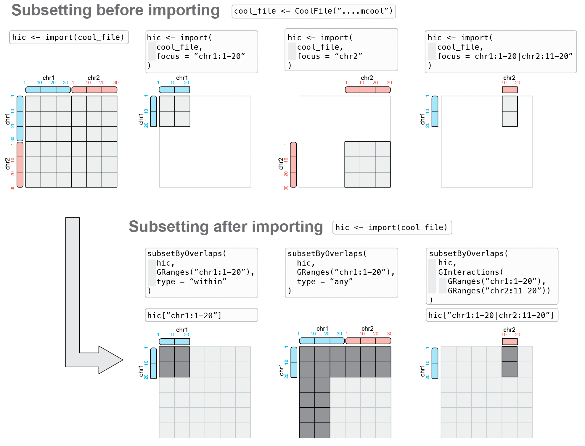

# coolf <- "<path-to-disk-stored-contact-matrix.cool>"
coolf <- HiContactsData('yeast_wt', 'mcool')
cf <- CoolFile(coolf)
availableResolutions(cf)
availableChromosomes(cf)3 Manipulating Hi-C data in R
Aims
This chapter focuses on:
- Modifying information associated with an existing
HiCExperimentobject - Subsetting a
HiCExperimentobject - Coercing a
HiCExperimentobject in a base data structure
Important reminder
- An
HiCExperimentobject allows random access parsing of a disk-stored contact matrix. - An
HiCExperimentobject operates by wrapping together (1) aContactFile(i.e. a connection to a disk-stored data file) and (2) aGInteractionsgenerated by parsing the data file.
Recap on
HiCExperiment objects 👇
- Creating a connection to a disk-stored contact matrix:
- Importing a contact matrix over a specific genomic location, at a given resolution:
hic <- import(cf, focus = 'II:10000-50000', resolution = 4000)
hic
## `HiCExperiment` object with 10,801 contacts over 11 regions
## -------
## fileName: "/root/.cache/R/ExperimentHub/f56b079dc5_7752"
## focus: "II:10,000-50,000"
## resolutions(5): 1000 2000 4000 8000 16000
## active resolution: 4000
## interactions: 45
## scores(2): count balanced
## topologicalFeatures: compartments(0) borders(0) loops(0) viewpoints(0)
## pairsFile: N/A
## metadata(0):- Recovering genomic interactions stored in a
HiCExperiment:
interactions(hic)
## GInteractions object with 45 interactions and 4 metadata columns:
## seqnames1 ranges1 seqnames2 ranges2 | bin_id1 bin_id2
## <Rle> <IRanges> <Rle> <IRanges> | <numeric> <numeric>
## [1] II 12001-16000 --- II 12001-16000 | 61 61
## [2] II 12001-16000 --- II 16001-20000 | 61 62
## [3] II 12001-16000 --- II 20001-24000 | 61 63
## [4] II 12001-16000 --- II 24001-28000 | 61 64
## [5] II 12001-16000 --- II 28001-32000 | 61 65
## ... ... ... ... ... ... . ... ...
## [41] II 36001-40000 --- II 40001-44000 | 67 68
## [42] II 36001-40000 --- II 44001-48000 | 67 69
## [43] II 40001-44000 --- II 40001-44000 | 68 68
## [44] II 40001-44000 --- II 44001-48000 | 68 69
## [45] II 44001-48000 --- II 44001-48000 | 69 69
## count balanced
## <numeric> <numeric>
## [1] 213 0.249303
## [2] 673 0.449271
## [3] 325 0.210001
## [4] 137 0.125732
## [5] 77 0.106917
## ... ... ...
## [41] 941 0.358860
## [42] 275 0.114972
## [43] 675 0.253868
## [44] 497 0.204920
## [45] 295 0.133344
## -------
## regions: 11 ranges and 4 metadata columns
## seqinfo: 16 sequences from an unspecified genome
Generating the example
hic object 👇
To demonstrate how to manipulate a HiCExperiment object, we will create an HiCExperiment object from an example .cool file provided in the HiContactsData package.
library(HiCExperiment)
library(HiContactsData)
# ---- This downloads an example `.mcool` file and caches it locally
coolf <- HiContactsData('yeast_wt', 'mcool')
## see ?HiContactsData and browseVignettes('HiContactsData') for documentation
## loading from cache
# ---- This creates a connection to the disk-stored `.mcool` file
cf <- CoolFile(coolf)
cf
## CoolFile object
## .mcool file: /root/.cache/R/ExperimentHub/f56b079dc5_7752
## resolution: 1000
## pairs file:
## metadata(0):
# ---- This imports contacts from the long arm of chromosome `II`, at resolution `2000`
hic <- import(cf, focus = 'II:300001-813184', resolution = 2000)
hic
## `HiCExperiment` object with 306,212 contacts over 257 regions
## -------
## fileName: "/root/.cache/R/ExperimentHub/f56b079dc5_7752"
## focus: "II:300,001-813,184"
## resolutions(5): 1000 2000 4000 8000 16000
## active resolution: 2000
## interactions: 18513
## scores(2): count balanced
## topologicalFeatures: compartments(0) borders(0) loops(0) viewpoints(0)
## pairsFile: N/A
## metadata(0):3.1 Subsetting a contact matrix
Two entirely different approaches are possible to subset of a Hi-C contact matrix:
Subsetting before importing: leveraging random access to a disk-stored contact matrix to only import interactions overlapping with a genomic locus of interest.
Subsetting after importing: parsing the entire contact matrix in memory, and subsequently subset interactions overlapping with a genomic locus of interest.

3.1.1 Subsetting before import: with focus
Specifying a focus when importing a dataset in R (i.e. "Subset first, then parse") is generally the recommended approach to import Hi-C data in R.
The focus argument can be set when importing a ContactFile in R, as follows:
import(cf, focus = "...")This ensures that only the needed data is parsed in R, reducing memory load and accelerating the import. Thus, this should be the preferred way of parsing HiCExperiment data, as disk-stored contact matrices allow efficient random access to indexed data.
focus can be any of the following string types:
# "II" --> import contacts over an entire chromosome
# "II:300001-800000" --> import on-diagonal contacts within a chromosome
# "II:300001-400000|II:600001-700000" --> import off-diagonal contacts within a chromosome
# "II|III" --> import contacts between two chromosomes
# "II:300001-800000|V:1-500000" --> import contacts between segments of two chromosomes
More examples for import with
focus argument 👇
- Subsetting to a specific on-diagonal genomic location using standard UCSC coordinates query:
import(cf, focus = 'II:300001-800000', resolution = 2000)
## `HiCExperiment` object with 301,018 contacts over 250 regions
## -------
## fileName: "/root/.cache/R/ExperimentHub/f56b079dc5_7752"
## focus: "II:300,001-800,000"
## resolutions(5): 1000 2000 4000 8000 16000
## active resolution: 2000
## interactions: 17974
## scores(2): count balanced
## topologicalFeatures: compartments(0) borders(0) loops(0) viewpoints(0)
## pairsFile: N/A
## metadata(0):- Subsetting to a specific off-diagonal genomic location using pairs of coordinates query:
import(cf, focus = 'II:300001-400000|II:600001-700000', resolution = 2000)
## `HiCExperiment` object with 402 contacts over 100 regions
## -------
## fileName: "/root/.cache/R/ExperimentHub/f56b079dc5_7752"
## focus: "II:300001-400000|II:600001-700000"
## resolutions(5): 1000 2000 4000 8000 16000
## active resolution: 2000
## interactions: 357
## scores(2): count balanced
## topologicalFeatures: compartments(0) borders(0) loops(0) viewpoints(0)
## pairsFile: N/A
## metadata(0):- Subsetting interactions to retain those constrained within a single chromosome:
import(cf, focus = 'II', resolution = 2000)
## `HiCExperiment` object with 471,364 contacts over 407 regions
## -------
## fileName: "/root/.cache/R/ExperimentHub/f56b079dc5_7752"
## focus: "II"
## resolutions(5): 1000 2000 4000 8000 16000
## active resolution: 2000
## interactions: 34063
## scores(2): count balanced
## topologicalFeatures: compartments(0) borders(0) loops(0) viewpoints(0)
## pairsFile: N/A
## metadata(0):- Subsetting interactions to retain those between two chromosomes:
import(cf, focus = 'II|III', resolution = 2000)
## `HiCExperiment` object with 9,092 contacts over 566 regions
## -------
## fileName: "/root/.cache/R/ExperimentHub/f56b079dc5_7752"
## focus: "II|III"
## resolutions(5): 1000 2000 4000 8000 16000
## active resolution: 2000
## interactions: 7438
## scores(2): count balanced
## topologicalFeatures: compartments(0) borders(0) loops(0) viewpoints(0)
## pairsFile: N/A
## metadata(0):- Subsetting interactions to retain those between parts of two chromosomes:
import(cf, focus = 'II:300001-800000|V:1-500000', resolution = 2000)
## `HiCExperiment` object with 7,147 contacts over 500 regions
## -------
## fileName: "/root/.cache/R/ExperimentHub/f56b079dc5_7752"
## focus: "II:300001-800000|V:1-500000"
## resolutions(5): 1000 2000 4000 8000 16000
## active resolution: 2000
## interactions: 6523
## scores(2): count balanced
## topologicalFeatures: compartments(0) borders(0) loops(0) viewpoints(0)
## pairsFile: N/A
## metadata(0):3.1.2 Subsetting after import
It may sometimes be desirable to import a full dataset from disk first, and only then perform in-memory subsetting of the HiCExperiment object (i.e. "Parse first, then subset"). This is for example necessary when the end user aims to investigate subsets of interactions across a large number of different areas of a contact matrix.
Several strategies are possible to allow subsetting of imported data, either with subsetByOverlaps or [.
3.1.2.1 subsetByOverlaps(<HiCExperiment>, <GRanges>)
subsetByOverlaps can take a HiCExperiment as a query and a GRanges as a query. In this case, the GRanges is used to extract a subset of a HiCExperiment constrained within a specific genomic location.
telomere <- GRanges("II:700001-813184")
subsetByOverlaps(hic, telomere) |> interactions()
## GInteractions object with 1540 interactions and 4 metadata columns:
## seqnames1 ranges1 seqnames2 ranges2 | bin_id1
## <Rle> <IRanges> <Rle> <IRanges> | <numeric>
## [1] II 700001-702000 --- II 700001-702000 | 466
## [2] II 700001-702000 --- II 702001-704000 | 466
## [3] II 700001-702000 --- II 704001-706000 | 466
## [4] II 700001-702000 --- II 706001-708000 | 466
## [5] II 700001-702000 --- II 708001-710000 | 466
## ... ... ... ... ... ... . ...
## [1536] II 804001-806000 --- II 810001-812000 | 518
## [1537] II 806001-808000 --- II 806001-808000 | 519
## [1538] II 806001-808000 --- II 808001-810000 | 519
## [1539] II 806001-808000 --- II 810001-812000 | 519
## [1540] II 808001-810000 --- II 808001-810000 | 520
## bin_id2 count balanced
## <numeric> <numeric> <numeric>
## [1] 466 30 0.0283618
## [2] 467 145 0.0709380
## [3] 468 124 0.0704979
## [4] 469 59 0.0510221
## [5] 470 59 0.0384004
## ... ... ... ...
## [1536] 521 1 NaN
## [1537] 519 15 0.0560633
## [1538] 520 25 NaN
## [1539] 521 1 NaN
## [1540] 520 10 NaN
## -------
## regions: 57 ranges and 4 metadata columns
## seqinfo: 16 sequences from an unspecified genomeBy default, subsetByOverlaps(hic, telomere) will only recover interactions constrained within telomere, i.e. interactions for which both ends are in telomere.
Alternatively, type = "any" can be specified to get all interactions with at least one of their anchors within telomere.
subsetByOverlaps(hic, telomere, type = "any") |> interactions()
## GInteractions object with 6041 interactions and 4 metadata columns:
## seqnames1 ranges1 seqnames2 ranges2 | bin_id1
## <Rle> <IRanges> <Rle> <IRanges> | <numeric>
## [1] II 300001-302000 --- II 702001-704000 | 266
## [2] II 300001-302000 --- II 704001-706000 | 266
## [3] II 300001-302000 --- II 768001-770000 | 266
## [4] II 300001-302000 --- II 784001-786000 | 266
## [5] II 302001-304000 --- II 740001-742000 | 267
## ... ... ... ... ... ... . ...
## [6037] II 804001-806000 --- II 810001-812000 | 518
## [6038] II 806001-808000 --- II 806001-808000 | 519
## [6039] II 806001-808000 --- II 808001-810000 | 519
## [6040] II 806001-808000 --- II 810001-812000 | 519
## [6041] II 808001-810000 --- II 808001-810000 | 520
## bin_id2 count balanced
## <numeric> <numeric> <numeric>
## [1] 467 1 0.000590999
## [2] 468 1 0.000686799
## [3] 500 1 0.000728215
## [4] 508 1 0.000923092
## [5] 486 1 0.000382222
## ... ... ... ...
## [6037] 521 1 NaN
## [6038] 519 15 0.0560633
## [6039] 520 25 NaN
## [6040] 521 1 NaN
## [6041] 520 10 NaN
## -------
## regions: 257 ranges and 4 metadata columns
## seqinfo: 16 sequences from an unspecified genome
3.1.2.2 <HiCExperiment>["..."]
The square bracket operator [ allows for more advanced textual queries, similarly to focus arguments that can be used when importing contact matrices in memory.
This ensures that only the needed data is parsed in R, reducing memory load and accelerating the import. Thus, this should be the preferred way of parsing HiCExperiment data, as disk-stored contact matrices allow efficient random access to indexed data.
The following string types can be used to subset a HiCExperiment object with the [ notation:
# "II" --> import contacts over an entire chromosome
# "II:300001-800000" --> import on-diagonal contacts within a chromosome
# "II:300001-400000|II:600001-700000" --> import off-diagonal contacts within a chromosome
# "II|III" --> import contacts between two chromosomes
# "II:300001-800000|V:1-500000" --> import contacts between segments of two chromosomes
# c("II", "III", "IV") --> import contacts within and between several chromosomes
More examples for subsetting with
[ 👇
- Subsetting to a specific on-diagonal genomic location using standard UCSC coordinates query:
hic["II:800001-813184"]
## `HiCExperiment` object with 1,040 contacts over 6 regions
## -------
## fileName: "/root/.cache/R/ExperimentHub/f56b079dc5_7752"
## focus: "II:800,001-813,184"
## resolutions(5): 1000 2000 4000 8000 16000
## active resolution: 2000
## interactions: 19
## scores(2): count balanced
## topologicalFeatures: compartments(0) borders(0) loops(0) viewpoints(0)
## pairsFile: N/A
## metadata(0):- Subsetting to a specific off-diagonal genomic location using pairs of coordinates query:
hic["II:300001-320000|II:800001-813184"]
## `HiCExperiment` object with 3 contacts over 6 regions
## -------
## fileName: "/root/.cache/R/ExperimentHub/f56b079dc5_7752"
## focus: "II:300001-320000|II:800001-813184"
## resolutions(5): 1000 2000 4000 8000 16000
## active resolution: 2000
## interactions: 3
## scores(2): count balanced
## topologicalFeatures: compartments(0) borders(0) loops(0) viewpoints(0)
## pairsFile: N/A
## metadata(0):- Subsetting interactions to retain those constrained within a single chromosome:
hic["II"]
## `HiCExperiment` object with 306,212 contacts over 257 regions
## -------
## fileName: "/root/.cache/R/ExperimentHub/f56b079dc5_7752"
## focus: "II"
## resolutions(5): 1000 2000 4000 8000 16000
## active resolution: 2000
## interactions: 18513
## scores(2): count balanced
## topologicalFeatures: compartments(0) borders(0) loops(0) viewpoints(0)
## pairsFile: N/A
## metadata(0):- Subsetting interactions to retain those between two chromosomes:
hic["II|IV"]
## `HiCExperiment` object with 0 contacts over 0 regions
## -------
## fileName: "/root/.cache/R/ExperimentHub/f56b079dc5_7752"
## focus: "II:1-813184|IV:1-1531933"
## resolutions(5): 1000 2000 4000 8000 16000
## active resolution: 2000
## interactions: 0
## scores(2): count balanced
## topologicalFeatures: compartments(0) borders(0) loops(0) viewpoints(0)
## pairsFile: N/A
## metadata(0):- Subsetting interactions to retain those between segments of two chromosomes:
hic["II:300001-320000|IV:1-100000"]
## `HiCExperiment` object with 0 contacts over 0 regions
## -------
## fileName: "/root/.cache/R/ExperimentHub/f56b079dc5_7752"
## focus: "II:300001-320000|IV:1-100000"
## resolutions(5): 1000 2000 4000 8000 16000
## active resolution: 2000
## interactions: 0
## scores(2): count balanced
## topologicalFeatures: compartments(0) borders(0) loops(0) viewpoints(0)
## pairsFile: N/A
## metadata(0):- Subsetting interactions to retain those constrained within several chromosomes:
hic[c('II', 'III', 'IV')]
## `HiCExperiment` object with 306,212 contacts over 257 regions
## -------
## fileName: "/root/.cache/R/ExperimentHub/f56b079dc5_7752"
## focus: "II, III, IV"
## resolutions(5): 1000 2000 4000 8000 16000
## active resolution: 2000
## interactions: 18513
## scores(2): count balanced
## topologicalFeatures: compartments(0) borders(0) loops(0) viewpoints(0)
## pairsFile: N/A
## metadata(0):Some notes:
- This last example (subsetting for a vector of several chromosomes) is the only scenario for which
[-based in-memory subsetting of pre-imported data is the only way to go, as such subsetting is not possible withfocusfrom disk-stored data. - All the other
[subsetting scenarii illustrated above can be achieved more efficiently using thefocusargument whenimporting data into aHiCExperimentobject. - However, keep in mind that subsetting preserves extra data, e.g. added
scores,topologicalFeatures,metadataorpairsFile, whereas this information is lost usingfocuswithimport.
3.1.3 Zooming on a HiCExperiment
“Zooming” refers to dynamically changing the resolution of a HiCExperiment. By zooming a HiCExperiment, one can refine or coarsen the contact matrix. This operation takes aContactFile and focus from an existing HiCExperiment input and re-generates a new HiCExperiment with updated resolution, interactions and scores. Note that zoom will preserve existing metadata, topologicalFeatures and pairsFile information.
hic
## `HiCExperiment` object with 306,212 contacts over 257 regions
## -------
## fileName: "/root/.cache/R/ExperimentHub/f56b079dc5_7752"
## focus: "II:300,001-813,184"
## resolutions(5): 1000 2000 4000 8000 16000
## active resolution: 2000
## interactions: 18513
## scores(2): count balanced
## topologicalFeatures: compartments(0) borders(0) loops(0) viewpoints(0)
## pairsFile: N/A
## metadata(0):
zoom(hic, 4000)
## `HiCExperiment` object with 306,212 contacts over 129 regions
## -------
## fileName: "/root/.cache/R/ExperimentHub/f56b079dc5_7752"
## focus: "II:300,001-813,184"
## resolutions(5): 1000 2000 4000 8000 16000
## active resolution: 4000
## interactions: 6800
## scores(2): count balanced
## topologicalFeatures: compartments(0) borders(0) loops(0) viewpoints(0)
## pairsFile: N/A
## metadata(0):
zoom(hic, 1000)
## `HiCExperiment` object with 306,212 contacts over 514 regions
## -------
## fileName: "/root/.cache/R/ExperimentHub/f56b079dc5_7752"
## focus: "II:300,001-813,184"
## resolutions(5): 1000 2000 4000 8000 16000
## active resolution: 1000
## interactions: 44363
## scores(2): count balanced
## topologicalFeatures: compartments(0) borders(0) loops(0) viewpoints(0)
## pairsFile: N/A
## metadata(0):
Note
The sum of raw counts do not change after zooming, however the number of individual interactions and regions changes.
Important
-
zoomdoes not change thefocus! It only affects theresolution(and consequently, theinteractions). -
zoomwill only work for multi-resolution contact matrices, e.g..mcoolor.hic.
3.2 Updating an HiCExperiment object
TL;DR: Which
HiCExperiment slots are mutable (✅) / immutable (⛔️)?
-
fileName(hic): ⛔️ (obtained from disk-stored file) -
focus(hic): 🤔 (see subsetting section) -
resolutions(hic): ⛔️ (obtained from disk-stored file) -
resolution(hic): 🤔 (see zooming section) -
interactions(hic): ⛔️ (obtained from disk-stored file) -
scores(hic): ✅ -
topologicalFeatures(hic): ✅ -
pairsFile(hic): ✅ -
metadata(hic): ✅
3.2.1 Immutable slots
An HiCExperiment object acts as an interface exposing disk-stored data. This implies that the fileName slot itself is immutable (i.e. cannot be changed). This should be obvious, as a HiCExperiment has to be associated with a disk-stored contact matrix to properly function (except in some advanced cases developed in next chapters).
For this reason, methods to manually modify interactions and resolutions slots are also not exposed in the HiCExperiment package.
A corollary of this is that the associated regions and anchors of an HiCExperiment should not be modified by hand either, since they are directly linked to interactions.
3.2.2 Mutable slots
That being said, HiCExperiment objects are flexible and can be partially modified in memory without having to change/overwrite the original, disk-stored contact matrix.
Several slots can be modified in memory: slots, topologicalFeatures, pairsFile and metadata.
3.2.2.1 scores
We have seen in the previous chapter that scores are stored in a list and are available using the scores function.
Extra scores can be added to this list, e.g. to describe the “expected” interaction frequency for each interaction stored in the HiCExperiment object). This can be achieved using the scores()<- function.
3.2.2.2 topologicalFeatures
The end-user can create additional topologicalFeatures or modify the existing ones using the topologicalFeatures()<- function.
topologicalFeatures(hic, 'CTCF') <- GRanges(c(
"II:340-352",
"II:3520-3532",
"II:7980-7992",
"II:9240-9252"
))
topologicalFeatures(hic, 'CTCF')
## GRanges object with 4 ranges and 0 metadata columns:
## seqnames ranges strand
## <Rle> <IRanges> <Rle>
## [1] II 340-352 *
## [2] II 3520-3532 *
## [3] II 7980-7992 *
## [4] II 9240-9252 *
## -------
## seqinfo: 1 sequence from an unspecified genome; no seqlengths
topologicalFeatures(hic, 'loops') <- GInteractions(
topologicalFeatures(hic, 'CTCF')[rep(1:3, each = 3)],
topologicalFeatures(hic, 'CTCF')[rep(1:3, 3)]
)
topologicalFeatures(hic, 'loops')
## GInteractions object with 9 interactions and 0 metadata columns:
## seqnames1 ranges1 seqnames2 ranges2
## <Rle> <IRanges> <Rle> <IRanges>
## [1] II 340-352 --- II 340-352
## [2] II 340-352 --- II 3520-3532
## [3] II 340-352 --- II 7980-7992
## [4] II 3520-3532 --- II 340-352
## [5] II 3520-3532 --- II 3520-3532
## [6] II 3520-3532 --- II 7980-7992
## [7] II 7980-7992 --- II 340-352
## [8] II 7980-7992 --- II 3520-3532
## [9] II 7980-7992 --- II 7980-7992
## -------
## regions: 3 ranges and 0 metadata columns
## seqinfo: 1 sequence from an unspecified genome; no seqlengths
hic
## `HiCExperiment` object with 306,212 contacts over 257 regions
## -------
## fileName: "/root/.cache/R/ExperimentHub/f56b079dc5_7752"
## focus: "II:300,001-813,184"
## resolutions(5): 1000 2000 4000 8000 16000
## active resolution: 2000
## interactions: 18513
## scores(3): count balanced random
## topologicalFeatures: compartments(0) borders(0) loops(9) viewpoints(0) CTCF(4)
## pairsFile: N/A
## metadata(0):All these objects can be used in *Overlap methods, as they all extend the GRanges class of objects.
# ---- This counts the number of times `CTCF` anchors are being used in the
# `loops` `GInteractions` object
countOverlaps(
query = topologicalFeatures(hic, 'CTCF'),
subject = topologicalFeatures(hic, 'loops')
)
## [1] 5 5 5 0
3.2.2.3 pairsFile
If pairsFile is not specified when importing the ContactFile into a HiCExperiment object, one can add it later.
pairsf <- HiContactsData('yeast_wt', 'pairs.gz')pairsFile(hic) <- pairsf
hic
## `HiCExperiment` object with 306,212 contacts over 257 regions
## -------
## fileName: "/root/.cache/R/ExperimentHub/f56b079dc5_7752"
## focus: "II:300,001-813,184"
## resolutions(5): 1000 2000 4000 8000 16000
## active resolution: 2000
## interactions: 18513
## scores(3): count balanced random
## topologicalFeatures: compartments(0) borders(0) loops(9) viewpoints(0) CTCF(4)
## pairsFile: /root/.cache/R/ExperimentHub/f53d30fcec_7753
## metadata(0):
3.2.2.4 metadata
Metadata associated with a HiCExperiment can be updated at any point.
3.3 Coercing HiCExperiment objects
Convenient coercing functions exist to transform data stored as a HiCExperiment into another class.
-
as.matrix(): allows to coerce theHiCExperimentinto asparseordensematrix (using thesparselogical argument,TRUEby default) and choosing specificscoresof interest (using theuse.scoresargument,"balanced"by default).
# ----- `as.matrix` coerces a `HiCExperiment` into a `sparseMatrix` by default
as.matrix(hic) |> class()
## [1] "dgTMatrix"
## attr(,"package")
## [1] "Matrix"
as.matrix(hic) |> dim()
## [1] 257 257
# ----- One can specify which scores should be used when coercing into a matrix
as.matrix(hic, use.scores = "balanced")[1:5, 1:5]
## 5 x 5 sparse Matrix of class "dgTMatrix"
##
## [1,] 0.009657438 0.07662234 0.05410199 0.04294051 0.04090521
## [2,] 0.076622340 0.05128277 0.09841564 0.06926737 0.05263611
## [3,] 0.054101992 0.09841564 0.05657589 0.08723160 0.07316890
## [4,] 0.042940512 0.06926737 0.08723160 0.03699543 0.08403496
## [5,] 0.040905212 0.05263611 0.07316890 0.08403496 0.04787415
as.matrix(hic, use.scores = "count")[1:5, 1:5]
## 5 x 5 sparse Matrix of class "dgTMatrix"
##
## [1,] 7 92 75 61 38
## [2,] 92 102 226 163 81
## [3,] 75 226 150 237 130
## [4,] 61 163 237 103 153
## [5,] 38 81 130 153 57
# ----- If **expressly required**, one can coerce a HiCExperiment into a dense matrix
as.matrix(hic, use.scores = "count", sparse = FALSE)[1:5, 1:5]
## [,1] [,2] [,3] [,4] [,5]
## [1,] 7 92 75 61 38
## [2,] 92 102 226 163 81
## [3,] 75 226 150 237 130
## [4,] 61 163 237 103 153
## [5,] 38 81 130 153 57-
as.data.frame(): simply coercinginteractionsinto a rectangular data frame
as.data.frame(hic) |> head()
## seqnames1 start1 end1 width1 strand1 bin_id1 weight1 center1
## 1 II 300001 302000 2000 * 266 0.03714342 301000
## 2 II 300001 302000 2000 * 266 0.03714342 301000
## 3 II 300001 302000 2000 * 266 0.03714342 301000
## 4 II 300001 302000 2000 * 266 0.03714342 301000
## 5 II 300001 302000 2000 * 266 0.03714342 301000
## 6 II 300001 302000 2000 * 266 0.03714342 301000
## seqnames2 start2 end2 width2 strand2 bin_id2 weight2 center2 count
## 1 II 300001 302000 2000 * 266 0.03714342 301000 7
## 2 II 302001 304000 2000 * 267 0.02242258 303000 92
## 3 II 304001 306000 2000 * 268 0.01942093 305000 75
## 4 II 306001 308000 2000 * 269 0.01895202 307000 61
## 5 II 308001 310000 2000 * 270 0.02898098 309000 38
## 6 II 310001 312000 2000 * 271 0.01834118 311000 43
## balanced random
## 1 0.009657438 0.4614872
## 2 0.076622340 0.6568060
## 3 0.054101992 0.7589135
## 4 0.042940512 0.3992278
## 5 0.040905212 0.3551184
## 6 0.029293930 0.3534359
Warning
These coercing methods only operate on interactions and scores, and discard all other information, e.g. regarding genomic regions, available resolutions, associated metadata, pairsFile or topologicalFeatures.